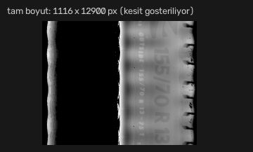
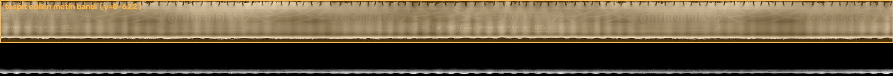
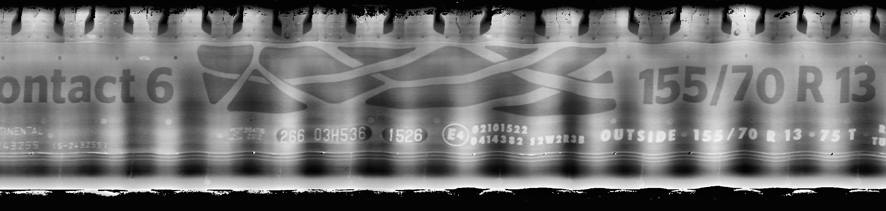
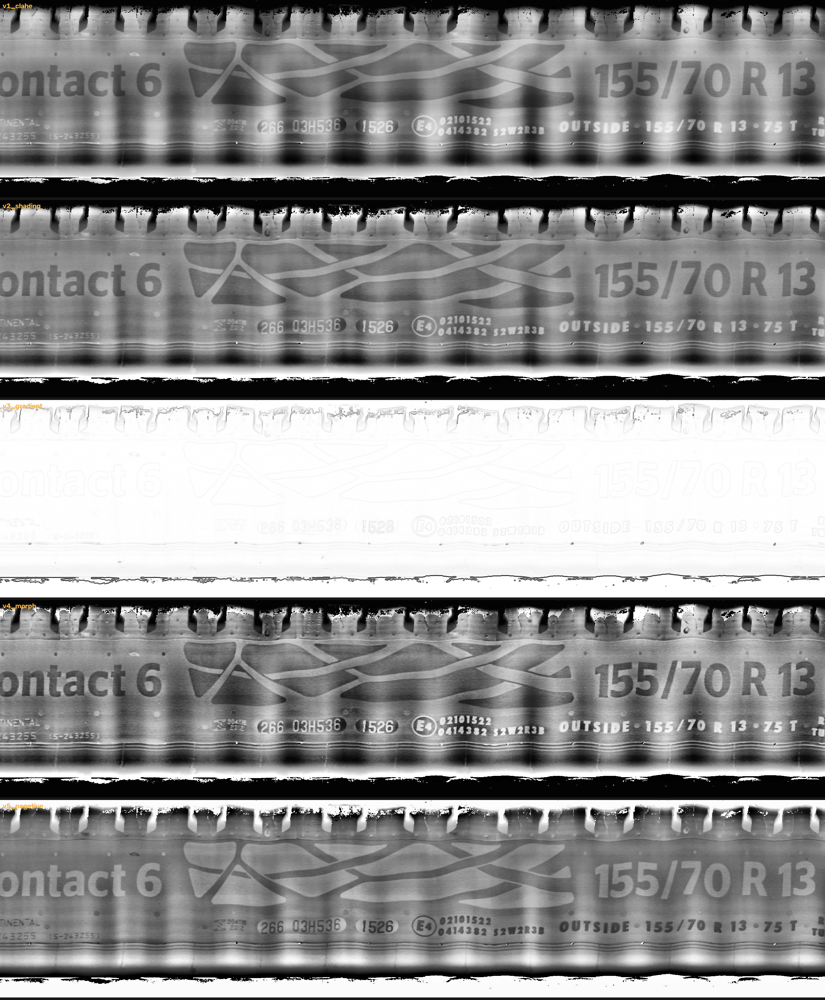
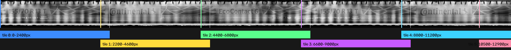
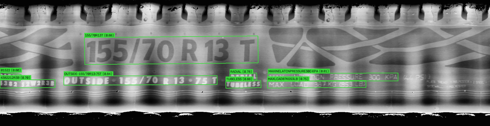
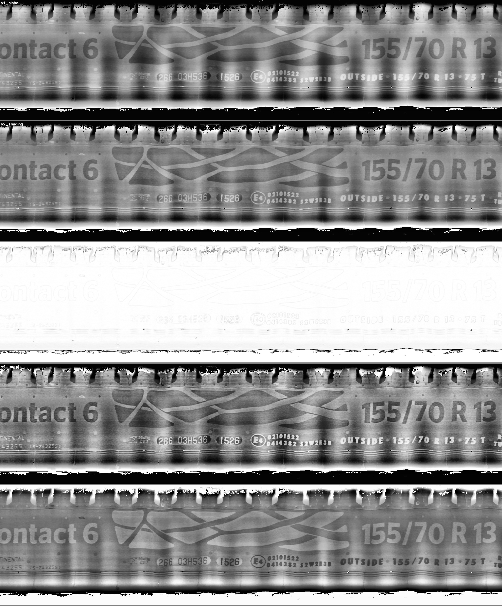
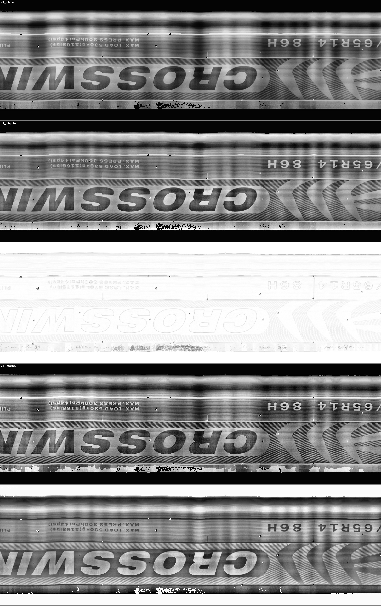

119 lastik · 238 görüntü · tamamen yerel/offline OCR motorları
20 Temmuz 2026
Line-scan kamerayla çekilmiş, lastik çevresi şerit halinde açılmış görüntülerden (≈1100×12900 px, düşük kontrastlı kabartma yazı) yapısal bilgileri okumak için uçtan uca yerel bir OCR hattı kuruldu: orientasyon tespiti → kalite kapısı → metin bandı kırpma → 5 farklı kontrast/aydınlatma varyantı → döşeme (tiling) → 3 OCR motoru → regex + sözlük tabanlı alan çıkarımı → çoklu kaynak oylaması.
Ground truth 9'dan 30 lastiğe genişletildi (§6.3) — DOT örneklemi de 3'ten 11'e çıktı. Tam alan tablosu ve konfigürasyon karşılaştırması: §10.
Tespit edilen markalar: Continental, Goodyear, Kumho, Lassa, Waterfall, Bridgestone, Crosswind, General Tire, Semperit, Nexen, Hankook ve muhtemelen daha fazlası — her biri birden çok desen/ebat kombinasyonuyla.
UNREADABLE işaretleniyor.| Varyant | Yöntem | En güçlü olduğu alan (benchmark'ta) |
|---|---|---|
v1_clahe | Temel CLAHE kontrast eşitleme | Genel amaçlı, hızlı |
v2_shading | Büyük çekirdekli Gauss aydınlatma düzeltme + CLAHE | Marka (%67), Üretim Yeri (%83) |
v3_gradient | Sobel gradyan büyüklüğü | Genelde en zayıf |
v4_morph | Top-hat/black-hat morfolojik kontrast (polariteden bağımsız) | DOT (%67) |
v5_negative | v2'nin negatifi | Ebat (%89) |
width_height_ratio
eşiği (varsayılan 8); girdi bu oranı aştığında motor tespit aşamasını atlayıp görüntüyü "tek satır" sanıyor.
Bizim şeritler ~20:1 olduğundan bindirmeli (~200px), güvenli oranda (bant yüksekliği×6 ile sınırlı) parçalara
bölünerek OCR'lanıyor.
RapidOCR (PP-OCR/ONNX), EasyOCR, Tesseract — ortak arayüz üzerinden karşılaştırıldı. PaddleOCR de denendi: kurulum başarılı oldu ama bu ortamda (Windows/CPU) çalışma anında oneDNN/PIR executor hatasıyla çöktü; RapidOCR zaten aynı model ailesini sorunsuz çalıştırdığından devre dışı bırakıldı.
Regex (ebat, DOT, made-in, tüpsüz/tüplü) + rapidfuzz ile sözlük tabanlı fuzzy eşleştirme
(marka, desen). Her alan için {yanak × tile × varyant × motor} kaynaklı tüm adaylar güven skoru + kaç farklı
kaynakta tekrarlandığıyla ağırlıklı oylanıyor.
Aşağıda gerçek bir örnek (Ust_5.jpg — Continental EcoContact 6, 155/70 R13) ham dosyadan
nihai alan çıkarımına kadar her adımda ne olduğunu, gerçek ara çıktı görselleriyle gösteriyor.
Line-scan kameradan gelen dosya dikey, çok uzun bir şerit (1116 × 12900 px). Lastik çevresi boyunca tarandığı için görüntünün büyük kısmı siyah (arka plan); yazı ancak sağdaki dar şeritte, çok düşük kontrastta seçilebiliyor.

Görüntü 180°-farklı iki adaya (A/B) döndürülüp her ikisinde hızlı bir RapidOCR güven skoru hesaplanıyor; yüksek skor kazanıyor. Bu örnekte: Aday A skoru 54.4 vs Aday B skoru 51.4 → A kazandı. Turuncu kutu, bir sonraki adımda kırpılacak metin bandını gösteriyor (arka plandaki siyah kısımlar atılacak).

Satır parlaklık profiliyle bulunan bant kırpılıyor: 622 × 12900 px (arka plandaki siyah tamamen atıldı). Aşağıdaki görsel bu bandın orta bir kesiti (temel CLAHE kontrastıyla) — "EcoContact 6" ve "155/70 R 13 T" artık net okunabiliyor.

Aynı kesit 5 farklı kontrast/aydınlatma yöntemiyle işleniyor — hangisinin hangi motorda/hangi alanda daha iyi çalıştığı §4.2'de karşılaştırılıyor.

Bant, RapidOCR'ın width_height_ratio=8 tuzağına düşmemek için ~200px bindirmeli,
2400px genişliğinde parçalara bölünüyor (bu lastikte 6 tile). Renkli dikey çizgiler tile
sınırlarını, beyaz köşeli parantezler bindirme (overlap) bölgelerini gösteriyor — bir kelime tam
sınıra denk gelse bile komşu tile'da bütün olarak yakalanabiliyor.

Her tile × her varyant, RapidOCR'a veriliyor; motor metin kutuları (yeşil çerçeve) + tanınan metin + güven skoru döndürüyor. Aşağıda en çok kutu bulunan tile (tile 3) gösteriliyor — kabartma "155/70 R 13 T" gibi büyük yazılar yüksek güvenle (0.88), "MAX INFLATION PRESSURE..." gibi küçük yazılar biraz gürültülü ama yine de okunabiliyor.

Yukarıdaki ham metin parçaları regex (ebat, DOT, made-in, tüp) ve rapidfuzz sözlük
eşleştirmesinden (marka, desen) geçiriliyor. Örnek: "155/70R13T" →
SIZE_RE eşleşip ebat=155/70 R13 + hız grubu=75T çıkarıyor;
"TUBELESS" → doğrudan tüp=Tüpsüz; ayrı bir tile'da geçen
"EcoContact6" fuzzy sözlükte Continental'ın "EcoContact 6" desenine %WRatio ile eşleşip
hem desen hem (geri çıkarımla) marka=Continental adayı üretiyor.
Bu lastik için 2 yanak × 6 tile × 5 varyant kombinasyonundan gelen toplam 30 kaynağın tamamındaki adaylar, alan başına güven skoru + kaç farklı kaynakta tekrarlandığıyla ağırlıklı oylanıp tek bir sonuca indirgeniyor:
| Alan | Sonuç | Oylama skoru |
|---|---|---|
| Ebat | 155/70 R13 | 6.26 |
| Hız Grubu | 75T | 4.94 |
| Marka | Continental | 15.31 |
| Desen | EcoContact 6 | 8.18 |
| Mevsim | Yaz | 7.10 |
| DOT | 1526 (hafta 15, 2026) | 3.18 |
| Ekstra Lot | 70R13T, 70R13, OUTSIDE155 | — |
| Üretildiği Yer | bulunamadı (None) | — |
| Tüplü/Tüpsüz | Tüpsüz | 7.20 |
"Oylama skoru" = adayın toplam güveni + kaç farklı tile/varyantta tekrarlandığının bonusu. Marka'nın skoru en yüksek çünkü "Continental" hem doğrudan hem desenden-çıkarım yoluyla birden fazla kaynakta tekrar tekrar çıktı.
| Motor | Süre (9 lastik) | Marka | Desen | Ebat | Hız Grubu | Mevsim | DOT | Üretim Yeri | Tüp |
|---|---|---|---|---|---|---|---|---|---|
| RapidOCR | 272sn | 56% | 22% | 78% | 33% | 67% | 67% | 33% | 86% |
| EasyOCR | 852sn (3.1x yavaş) | 56% | 11% | 78% | 67% | 67% | 67% | 17% | 71% |
| Tesseract | 99sn | 11% | 0% | 0% | 0% | 22% | 0% | 0% | 0% |
Sonuç: RapidOCR kazanan. Tesseract kabartma lastik yazısında kullanılamaz durumda.
| Varyant | Marka | Desen | Ebat | Hız Grubu | Mevsim | DOT | Üretim Yeri | Tüp |
|---|---|---|---|---|---|---|---|---|
| v1_clahe | 56% | 22% | 78% | 33% | 67% | 67% | 33% | 86% |
| v2_shading | 67% | 22% | 78% | 22% | 56% | 33% | 83% | 86% |
| v3_gradient | 11% | 11% | 78% | 44% | 44% | 33% | 67% | 86% |
| v4_morph | 56% | 22% | 78% | 44% | 56% | 67% | 67% | 86% |
| v5_negative | 44% | 22% | 89% | 33% | 56% | 67% | 50% | 86% |
Sonuç: Tek bir "en iyi" varyant yok — üretim için önerilen yaklaşım: birden fazla varyantı paralel oylamak.
| Konfigürasyon | Süre | Marka | Desen | Ebat | Üretim Yeri |
|---|---|---|---|---|---|
| RapidOCR + 5 varyant | 864sn (3.2x) | 56% | 22% | 89% | 100% |
| RapidOCR+EasyOCR + v4_morph | 1088sn (4.0x) | 78% | 22% | 89% | 67% |
İlk turda desen tanıma tüm konfigürasyonlarda ~%22'de takılı kaldı. İterasyonla kök nedenler bulunup düzeltildi:
Marka-bağımsız desen araması: Sistem tüm marka+desen sözlüğüne karşı fuzzy arama yapıyordu; bir Crosswind "Comfort Peak" lastiği yanlışlıkla Semperit "Comfort-Life 2"'ye eşleşebiliyordu.
Sözlükte eksik markalar: Veri setinde gerçekten var olan Waterfall ve Crosswind markaları ilk sözlükte hiç yoktu — bu markalar asla doğru tanınamıyordu.
Çok gevşek fuzzy eşiği (score_cutoff=78): Kısa/genel sözlük string'leri ("Green-Max", "Incurro A/S ST450") gürültülü OCR metniyle tutarlı biçimde yanlış-pozitif üretiyordu.
| Adım | Marka | Desen |
|---|---|---|
| Başlangıç | 56% | 22% |
| Tek-kaynak marka-kısıtlı desen araması | 56% | 22% (iyileşme yok) |
| İki geçişli mimari (küresel marka oylaması → kısıtlı 2. desen geçişi) | 56% | 22% (hâlâ yok) |
| + Fuzzy eşiği 78→88 / 68→80 yükseltme | 78% | 33% |
| + Sözlüğe Waterfall, Crosswind eklendi | 100% | 44% |
None döndürüyor — yanlış-ama-kendinden-emin bir cevap vermek yerine sessiz kalmak, üretim
ortamı için çok daha güvenli bir davranış.
run_all.py, benchmark'ın maliyet/doğruluk analizine göre RapidOCR + v1_clahe
konfigürasyonunu seçti (gerekçe: en pahalı ensemble 119 lastikte ~240 dakika sürecekti; 90 dk sınırı için
hızlı konfigürasyon tercih edildi).
| Alan | Kapsam |
|---|---|
| Marka | 107/119 (%90) |
| Desen | 84/119 (%71) |
| Ebat | 90/119 (%76) |
| Hız Grubu | 53/119 (%45) |
| Mevsim | 80/119 (%67) |
| DOT | 92/119 (%77) |
| Üretim Yeri | 50/119 (%42) |
| Tüp | 103/119 (%87) |
| Alan | Doğruluk |
|---|---|
| Marka | 8/9 (%89) |
| Desen | 5/9 (%56) |
| Ebat | 7/9 (%78) |
| Hız Grubu | 3/9 (%33) |
| Mevsim | 5/9 (%56) |
| DOT | 2/3 (%67)* |
| Üretim Yeri | 2/6 (%33) |
| Tüp | 6/7 (%86) |
*örneklem küçük — çoğu GT satırında DOT "?" işaretli
Tüm 119 lastiğin alan-alan dökümü (güven skorlarıyla): results/sonuclar.csv
Rapor tamamlandıktan sonra kullanıcı isteğiyle CUDA'lı torch (RTX 3060 Laptop, CUDA 12.6)
ve onnxruntime-gpu kurularak her iki motor da GPU'ya taşındı. Kurulumda iki teknik engel
ortaya çıktı ve çözüldü:
nvidia-cublas, nvidia-cufft, nvidia-cudnn-cu13 pip paketleri kurulup
klasörleri PATH'e eklendi (os.add_dll_directory() işe yaramadı, sadece PATH değişikliği
onnxruntime'ın native yükleyicisi tarafından görülebildi).WinError 127 ile çöküyordu). Çözüm:
src/engines/__init__.py'de torch'u en başta, hangi motor önce çağrılırsa
çağrılsın import ederek çakışmayı torch lehine sabitlemek.Not: bu ölçüm 3 lastiklik hızlı bir doğrulama turudur (§6'daki 119 lastiklik tam koşu CPU ile yapılmıştı); GPU'nun asıl faydası EasyOCR'ı RapidOCR'a neredeyse yakın hıza getirip motor-ensemble seçeneklerini artık pratik kılması.
Neden gerekliydi: §4.3'teki benchmark, RapidOCR+EasyOCR'ı v4_morph varyantında
birlikte kullanmanın (2 motor × 1 varyant = "x2 maliyet") öncelikli alanlarda (marka, desen, ebat, DOT)
tek-motor tek-varyant konfigürasyonuna göre +8 puan kazandırdığını göstermişti. Ama bu konfigürasyon
119 lastiğin tamamında CPU'da tahmini ~240 dakika sürüyordu — 90 dakikalık oturum bütçesini fazlasıyla
aşıyordu, bu yüzden ilk üretim koşusu (§6) daha ucuz ama daha az isabetli tek-motor/tek-varyant konfigürasyonuyla
yapılmıştı.
Ne değişti: GPU kurulumuyla (§6.1) RapidOCR ~3.1×, EasyOCR ~6.4× hızlandığı için, bu "pahalı ama
isabetli" ensemble konfigürasyonu artık ~80 dakikaya iniyor — bütçeye sığıyor. src/run_all.py'deki
otomatik konfigürasyon seçici (pick_best_config) buna göre güncellendi: artık CPU-ölçümlü süre
tahminine bir gpu_speedup çarpanı (temkinli x3.0) uyguluyor, böylece GPU aktifken daha isabetli
ama daha maliyetli konfigürasyonları otomatik olarak tercih edebiliyor. Sistem gerçekten de
RapidOCR + EasyOCR (v4_morph) konfigürasyonunu kendi seçti ve 119 lastiğin tamamını bu konfigürasyonla
yeniden işledi.
Beklenmedik ama açıklanabilir bir sonuç: yeni konfigürasyon (2 motor) GPU'da, eski konfigürasyondan (1 motor) CPU'da daha hızlı çıktı — çünkü GPU'nun sağladığı hızlanma, ikinci motoru eklemenin getirdiği ek maliyetten daha büyük.
| Alan | Eski (RapidOCR, v1_clahe, CPU) | Yeni (RapidOCR+EasyOCR, v4_morph, GPU) | Fark |
|---|---|---|---|
| Marka | 8/9 — %89 | 7/9 — %78 | −11 puan |
| Desen | 5/9 — %56 | 5/9 — %56 | değişmedi |
| Ebat | 7/9 — %78 | 8/9 — %89 | +11 puan |
| Hız Grubu | 3/9 — %33 | 7/9 — %78 | +45 puan |
| Mevsim | 5/9 — %56 | 6/9 — %67 | +11 puan |
| DOT | 2/3 — %67 | 3/3 — %100 | +33 puan |
| Üretildiği Yer | 2/6 — %33 | 4/6 — %67 | +34 puan |
| Tüplü/Tüpsüz | 6/7 — %86 | 6/7 — %86 | değişmedi |
8 alanın ortalaması: eski konfigürasyon %62.3 → yeni konfigürasyon %77.6 (+15.3 puan). Tek düşen alan marka (9 lastiklik küçük örneklemde 1 lastiğin sınırda kayması) — 119'un tamamındaki kapsamda marka aslında yükseldi (aşağıya bakınız), yani bu düşüş büyük olasılıkla örneklem gürültüsü.
| Alan | Eski | Yeni |
|---|---|---|
| Marka | 107/119 — %90 | 110/119 — %92 |
| Desen | 84/119 — %71 | 97/119 — %82 |
| Ebat | 90/119 — %76 | 96/119 — %81 |
| Hız Grubu | 53/119 — %45 | 83/119 — %70 |
| Mevsim | 80/119 — %67 | 86/119 — %72 |
| DOT | 92/119 — %77 | 102/119 — %86 |
| Üretildiği Yer | 50/119 — %42 | 54/119 — %45 |
| Tüplü/Tüpsüz | 103/119 — %87 | 105/119 — %88 |
Neden bu kadar iyileşti? İki motorun (RapidOCR + EasyOCR)
farklı hata modları var — biri bir tile'da/varyantta okuyamadığını diğeri okuyabiliyor; §3.3'teki oylama
mekanizması bu iki bağımsız görüşü birleştirip tek bir alandan gelen (ve dolayısıyla yanlış olduğunda ikisinin
de aynı hatayı yapma riski taşıyan) sonuçtan daha sağlam bir karar üretiyor. Kaynak kod:
results/sonuclar_gpu_ensemble_final.csv (yeni, üretimde kullanılan) vs
results/sonuclar_cpu_v1clahe_baseline.csv (eski, karşılaştırma için saklandı).
Bu bölüm, kullanıcının "inisiyatif al, farklı yöntemler/modeller dene, gerekirse VLM gibi ağır araçları da dene" isteğiyle yapılan ikinci bir Ar-Ge turunu özetliyor. Dört faz halinde ilerlendi; her fazın sonunda 30 lastiklik genişletilmiş ground truth setinde ölçüm yapıldı, kazanmayan yaklaşımlar da (VLM gibi) dürüstçe raporlandı.
Önceki turdaki 9 lastiklik ground truth, iyileştirmeleri güvenilir ölçmek için yetersizdi (özellikle DOT'ta sadece 3 gerçek değer vardı). 21 yeni lastik hedefli seçilip elle etiketlendi: 10 Kumho (desen=None kalan lastikler), 5 marka=None kalan lastik, 6 marka-çeşitliliği+yüksek güvenli DOT adayı. Bu incelemede iki önemli bulgu çıktı:
Üç düzeltme yapıldı: (1) lexicon.py'ye eksik Kumho desenleri eklendi, (2)
fuse.py'ye marka↔desen tutarlılık cezası eklendi — nihai marka biliniyorken
o markanın sözlüğünde olmayan desen adayları ağır cezalandırılıyor (×0.15), (3)
extract.py'de DOT alanı sıkılaştırıldı — artık yalnız geçerli hafta+yıl (4 hane)
formatındaki adaylar dot alanına yazılıyor, DOT damgası civarındaki diğer
alfasayısal kodlar (ör. "1Y0 9LYA8J") ekstra_lot'a taşınıyor.
| Alan | Faz 0 (30-GT) | Faz 1 (30-GT) | Fark |
|---|---|---|---|
| Marka | %80 | %80 | değişmedi |
| Desen | %33 | %58 | +25 puan |
| Mevsim | %43 | %65 | +22 puan |
| DOT | %64 | %73 | +9 puan |
| TOPLAM (8 alan) | %56.3 | %63.2 | +6.9 puan |
Teşhis: sonuclar.csv analizinde "General Tire"
markasına başka markaların desenlerinin (Eco Dynamic, Green-Max, Ventus Prime 4 — hiçbiri General
Tire'ın kendi sözlüğünde yok) sık sık yanlışlıkla atandığı görüldü; bu tam olarak marka↔desen
tutarlılık cezasının hedeflediği hata türüydü.
Yeni nesil rapidocr paketi (3.9.1) denendi — eski rapidocr_onnxruntime
(1.2.3, PP-OCRv3 modelleri) yerine PP-OCRv6 det/rec modellerini kullanıyor. Ayrı bir motor
adıyla (rapidocr_v6) sisteme eklendi, eskisiyle yan yana durabiliyor. Tek motor olarak
(v1_clahe, GPU) 30-GT'de karşılaştırma çarpıcı çıktı:
| Alan | Eski (PP-OCRv3) | Yeni (PP-OCRv6) | Fark |
|---|---|---|---|
| Ebat | %52 | %92 | +40 puan |
| Hız Grubu | %20 | %76 | +56 puan |
| Üretim Yeri | %15 | %45 | +30 puan |
| Tüplü/Tüpsüz | %76 | %90 | +14 puan |
| TOPLAM (8 alan) | %54.6 | %71.8 | +17.2 puan |
| Hız (119 lastik tam koşu) | ~20 sn/lastik (ensemble içinde) | 54.1 sn/lastik | ~2.7× yavaş |
PP-OCRv6 belirgin şekilde daha güçlü bir metin tanıma modeli — ama ~2.7-5× daha yavaş. Bu, bir sonraki bölümdeki nihai karar için temel karşılaştırma noktası oldu.
Kullanıcının açıkça istediği "ağır" bir deneme: Ollama üzerinden Qwen2.5-VL 3B (4-bit, ~3GB,
tamamen yerel, GPU'da) kuruldu ve yapılandırılmış JSON çıktı isteyen bir prompt ile denendi
(src/vlm.py). İlk denemede model boş yanıt döndürdü — kök neden: gri tonlamalı
(tek kanal) PNG ve aşırı geniş (2600px) görüntü. RGB'ye çevirip 1400px'e sınırlayınca:
Ama 30 lastiklik tam benchmark'ta genel doğruluk sadece %30.5 çıktı (marka %8, desen %25, ebat %44, DOT %36). Neden bu kadar düşük? Klasik pipeline her lastik için onlarca tile/varyant kombinasyonunu tarıyor; VLM testinde ise hız/maliyet nedeniyle sadece 1 kesit/yanak (2 kesit/lastik) denendi. Marka/desen yazısı çoğu lastikte bu tek kesitin dışında kaldığından model doğru şeyi görmedi bile — bu VLM'in okuma kapasitesinin değil, örnekleme stratejisinin sınırı. Tire 5 örneği bunu kanıtlıyor: doğru kesit gösterildiğinde model kusursuz okudu.
Neden üretime alınmadı: Klasik pipeline'ın tiling yaklaşımını VLM'e uygulamak (her lastik için 6+ VLM çağrısı × ~14sn) 119 lastikte ~3 saate çıkar — bu turun bütçesini aşıyor. Somut sonraki adım (rapora not düşüldü, §9): VLM'i tam pipeline yerine, klasik OCR'ın boş/düşük-güvenli bıraktığı alanlar için hedefli fallback olarak kullanmak — çok daha az çağrı gerektirir ve bu turda görülen yüksek isabetli okuma kalitesinden faydalanır.
Tüm fazlar sonunda, 119 lastiğin tamamında koşturulup 30-GT ile puanlanmış üç konfigürasyon:
| Konfigürasyon | Süre (119 lastik) | sn/lastik | Doğruluk (30-GT, 8 alan) |
|---|---|---|---|
| Faz 0 (ilk GPU+ensemble) | 39.6 dk | 20.0 | %56.3 |
| Faz 1-ensemble (RapidOCR-v3+EasyOCR, düzeltilmiş) | 37.7 dk | 19.0 | %63.2 |
| PP-OCRv6 (tek motor) | 107.2 dk | 54.1 | %71.8 |
Seçilen üretim konfigürasyonu: Faz 1-ensemble. Faz 0'a göre hem daha hızlı hem daha
doğru — net kazanç, ödünleşim yok. PP-OCRv6 daha da yüksek doğruluk sunuyor ama ~2.85× daha
yavaş; doğruluk önceliği süre kısıtından daha ağır basan kullanım senaryoları için (ör. gece
toplu işleme) PP-OCRv6 iyi bir alternatif olarak results/sonuclar_v6_final.csv'de
saklandı. Karşılaştırma için diğer tüm ara sonuçlar da results/ altında korunuyor
(sonuclar_faz0_baseline_backup.csv, sonuclar_faz1_ensemble_final.csv,
sonuclar_v6_final.csv).
Aşağıda Ust_5.jpg (Continental EcoContact 6) için ön işleme varyantlarının bir kesiti —
DOT kodu "266 03H536 (1526)" (hafta 15, 2026) çok net okunabiliyor:


Tamamen yerel/offline motorlarla, düşük kontrastlı kabartma lastik yazısından anlamlı ölçüde bilgi
çıkarmak mümkün ve fizibıl. İki tur Ar-Ge sonunda (bkz. §6.2, §6.3), 30 lastiklik genişletilmiş
ground truth setiyle doğrulanmış üretim konfigürasyonu: GPU + RapidOCR＋EasyOCR ensemble
(v4_morph) + Faz 1 kod düzeltmeleri (sözlük genişletme, marka↔desen tutarlılık
cezası, DOT sıkılaştırma). Bu konfigürasyon, ilk turun sonucuna göre hem daha hızlı hem daha
doğru; ondan daha da yüksek doğruluk isteyen kullanım senaryoları için PP-OCRv6 tek-motor
alternatifi de doğrulanıp saklandı (§6.3).
| Alan | Doğruluk (30 lastiklik ground truth) | Kapsam (119 lastiğin kaçında bir değer üretildi) |
|---|---|---|
| Marka | 20/25 — %80 | 110/119 — %92 |
| Desen | 14/24 — %58 | 105/119 — %88 |
| Ebat | 18/25 — %72 | 96/119 — %81 |
| Hız Grubu | 13/25 — %52 | 81/119 — %68 |
| Mevsim | 15/23 — %65 | 93/119 — %78 |
| DOT (üretim tarihi) | 8/11 — %73 | 92/119 — %77 |
| Üretildiği Yer | 6/20 — %30 | 54/119 — %45 |
| Tüplü/Tüpsüz | 16/21 — %76 | 105/119 — %88 |
Ground truth 9'dan 30 lastiğe genişletildi (§6.3, Faz 0) — DOT örneklemi 3'ten 11'e çıktı, artık istatistiksel olarak daha anlamlı. "Kapsam", sistemin bir değer ürettiği oranı gösterir — doğru olduğu anlamına gelmez; doğruluk sütunu ground truth ile karşılaştırmadır.
| Konfigürasyon | Toplam süre (119 lastik) | sn/lastik | Doğruluk (30-GT) |
|---|---|---|---|
| Faz 0: RapidOCR-v3+EasyOCR, GPU (ilk tur) | 39.6 dk | 20.0 | %56.3 |
| Faz 1: RapidOCR-v3+EasyOCR, GPU + kod düzeltmeleri (seçilen) | 37.7 dk | 19.0 | %63.2 |
| PP-OCRv6 tek motor (alternatif, yüksek doğruluk) | 107.2 dk | 54.1 | %71.8 |
GPU'nun sağladığı hızlanma (RapidOCR 3.1×, EasyOCR 6.4×), ikinci motoru devreye almanın maliyetinden büyük olduğu için Faz 1 konfigürasyonu Faz 0'a göre hem daha isabetli hem daha hızlı çıktı. PP-OCRv6 (§6.3) daha da yüksek doğruluk sunuyor ama ~2.85× daha yavaş — süre kısıtı gevşek olan kullanım senaryoları (ör. gece toplu işleme) için değerlendirilebilir.
En zayıf alanlar üretim yeri (%30) ve hız grubu (%52) — somut sonraki-adım önerileri §9'da (sözlük
genişletme, DOT'a özel oval tespiti, VLM tabanlı hedefli fallback §6.3). Sistem tamamen modüler
(src/preprocess.py, tiling.py, engines/, extract.py,
fuse.py, vlm.py) olduğundan hem sözlük genişletmeye hem yeni motor/varyant
eklemeye açık.